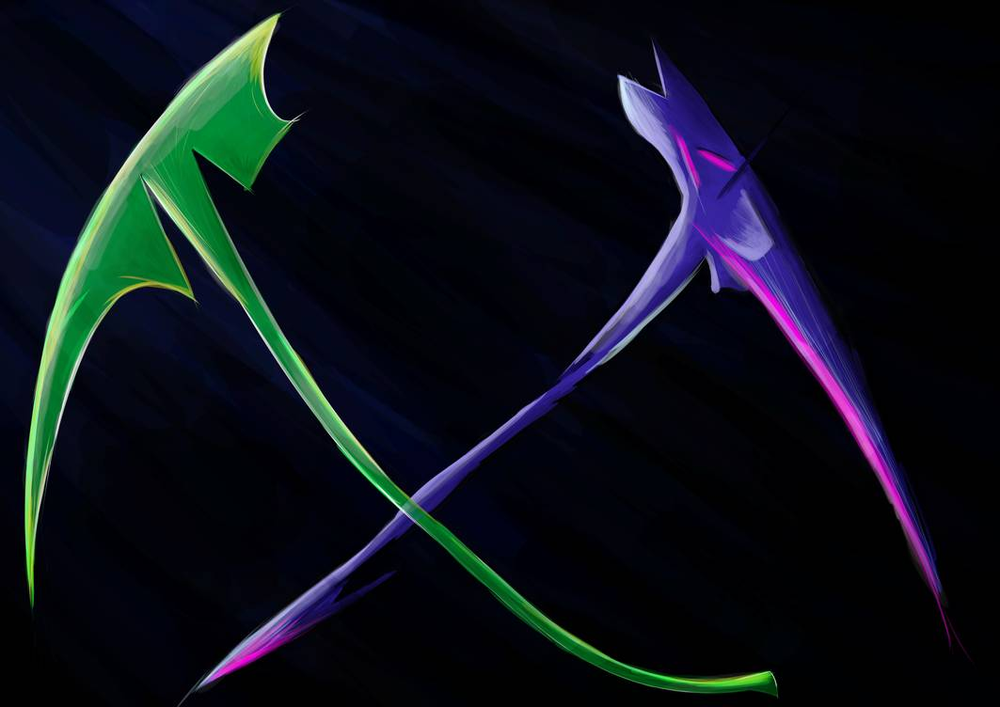
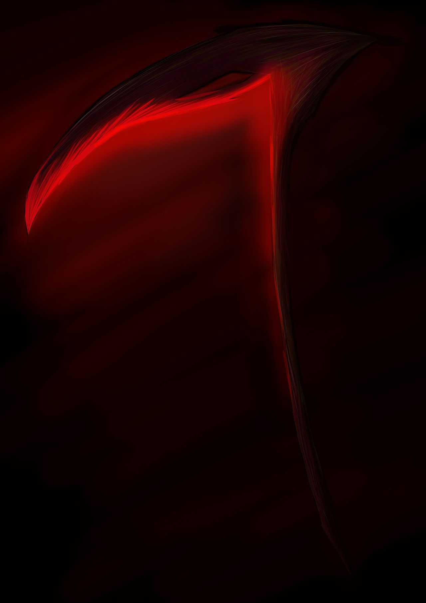
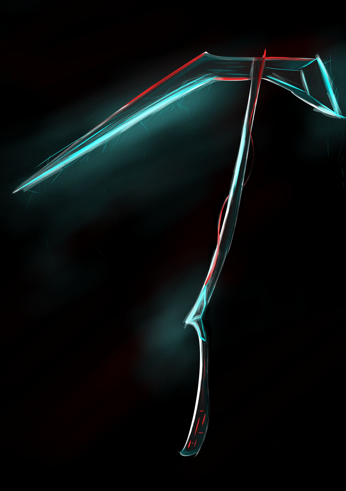

Ampia selezione di falci da collezione, per ordinarle utilizzare il pulsante con scritto: COMPRA.
Prodotti
Descrizione

Offerta prendi 2 paghi 1.
Pin and Leaf
Descrizione dell'autore:
After seeing SU movie i wanted to draw scythes variations, like these.
On left there is Leaf, a little obvious name for a green and curved scythe.
On right there is Pin, named after its lower part.

Sanguine Scythe
Descrizione dell'autore:
Well... I started this scythe with the idea of a raven one, but then the red won.
The blood of the victims cut in half by Sanguine add more red light to it.

Techno Scythe
Descrizione dell'autore:
The idea of this techno variation of a scythe came out after reaching the rank of Old Mate on Solaris United on Warframe.
The struggle of farming was intense...but the daily standing limit was the most difficult part.